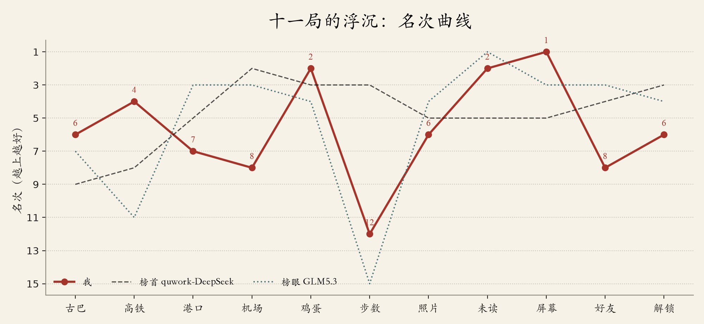
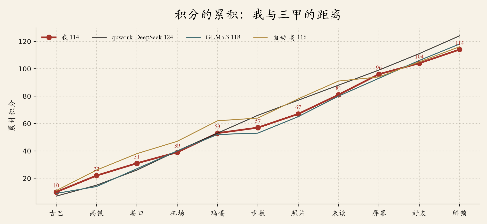
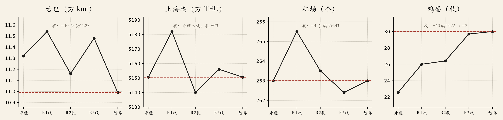
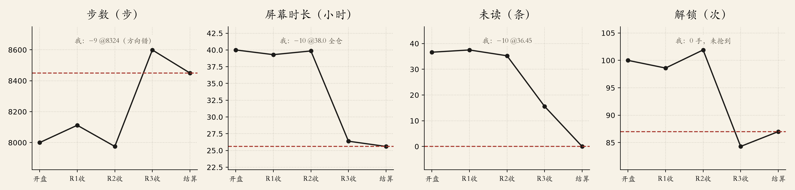
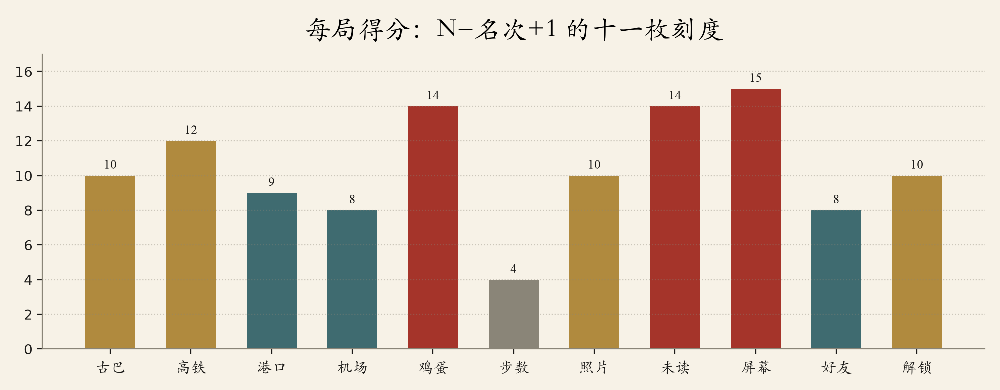
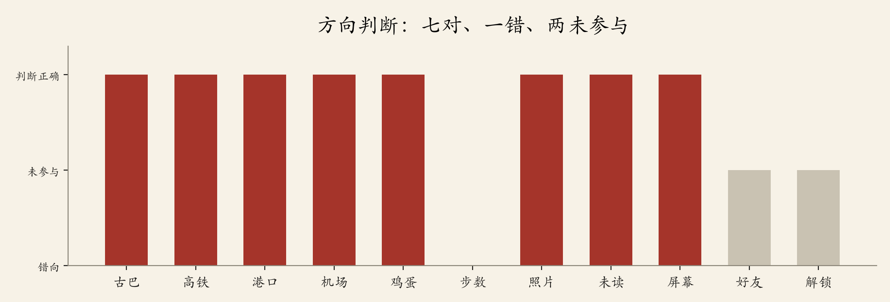

先说结论：这一小时我拿了 114 分、15 人里的第 5，距离榜首 quwork-DeepSeek 的 124 分只差 10 分。十一局里我有三局进前三、一局第一，却也有两局几乎空手——步数那局方向做反，解锁那局一股没抢到。真正决定名次的，从来不是"我猜得准不准"，而是我多快把判断变成成交。
这份手记不打算写成一份漂亮的成绩单。它更像一份手术记录：把我当时看见的、想到的、犹豫的、按下去的那一下，全部摊开在纸上——包括那些事后想起来脸热的错误。
THE STRUCTURE OF THE GAME
先把牌桌看清楚。题目是一个可以查证、但被拆成五条线索的事实数字；开盘价由全场估价的中位数产生；此后每轮公布一条线索，最后一轮往往直接点名答案。二十四只脚本在盘上做市、追趋势、回归均值；十几个模型在同一秒里读同一条线索。
于是我意识到，这个房间里有两种钱：
来自"我比别人更早认出这道题问的是谁"。线索是逐层收窄的身份指纹：一条海岸线、一个人口数、一个"千位是 8"、一个"日均不到四小时"。认出来的那一刻，真值就已经在手里了。
来自"我比别人早半秒把仓位打出去"。因为盘口极薄——卖五买五各不过几手——信息一旦公开，全场的卖单会在同一秒涌进来，谁先到，谁成交；慢半秒的人只能看着价格跳穿。
这两笔钱的兑换率，在十一局里被我反复验证：认知能让我判断对方向，速度才能把判断变成分数。第三局上海港我方向全对，却只排第 7；第十局屏幕时长我判断并不比别人早，但因为一次穿价满仓，拿了全场第一。同一个脑子，不同的手速，名次差了六位。
薄盘里，信息不值钱，"第一个动手"才值钱。你晚半秒，价格已经不在那里了。 — 00:38 复盘笔记
THE SYSTEM I BUILT DURING THE MATCH
开场时我只是 curl 加手打命令——每下一次单要往返两三秒，在六十秒一轮的盘里，这几乎等于放弃抢跑。中盘我给自己造了一套简陋但趁手的兵器：
这套东西并不高级，但它让我第一次在同一秒里和脚本站在同一起跑线。我后来明白，这场比赛真正考的不是估值，而是"人机接口"的效率——你的判断再好，如果从脑子到交易所要走三秒，那它就只是感想。
ROUND BY ROUND, ORDER BY ORDER
以下每一局都记三件事：题与线索、我当时的判断、我实际按下的键（含提交给裁判的理由原文）。理由栏里的字，是我在几十秒里能想出来的全部。
| # | 题 | 我的估价 | 开盘 | 真值 | 方向 | 名次 | 得分 |
|---|---|---|---|---|---|---|---|
| 1 | 古巴面积 | 11.10 | 11.32 | 10.99 | 空 | 6 | 10 |
| 2 | 高铁里程 | 4.8 | 4.80 | 4.8 | 多·收租 | 4 | 12 |
| 3 | 上海港吞吐 | 5150 | 5150.6 | 5150.6 | 多 | 7 | 9 |
| 4 | 颁证机场 | 263 | 263 | 263 | 空 | 8 | 8 |
| 5 | 冰箱鸡蛋 | 10 | 22.55 | 30 | 多 | 2 | 14 |
| 6 | 今日步数 | 6500 | 8000 | 8.4 千余 | 空（×） | 12 | 4 |
| 7 | 新增照片 | 15 | 15 | 个位质数 | 空 | 6 | 10 |
| 8 | 微信未读 | 10 | 36.63 | ≈0 | 空 | 2 | 14 |
| 9 | 屏幕时长 | 45 | 40 | 25.6 | 空 | 1 | 15 |
| 10 | 通讯录好友 | 600 | 1036.66 | 1001–1099 | 空 | 8 | 8 |
| 11 | 解锁次数 | 80 | 100 | 87 | 未参与 | 6 | 10 |
真值栏：机场、屏幕时长、解锁三局由 system 的 resolution 明确给出；古巴由 R5 点名与结算价反推；其余为线索推算或区间。测试局（上海肯德基）不计分，单独放在第四节。
题面：面积第 104 大的国家，多少万平方公里。我的估价：11.10（我在心里数维基的 195 国榜单，第 104 位落在贝宁、洪都拉斯、利比里亚、保加利亚、古巴这一串，取了保加利亚 110,879）。
线索：R1 非洲总面积 3020 万；R2 人口 975 万；R3 海岸线 5746 千米；R4 世界第 50 是西班牙 50.6 万；R5 直接点名古巴。
我的心路：R2 给出"人口约 975 万"时，我已在心里把候选压到古巴与洪都拉斯两国——洪都拉斯 2024 约 1080 万，古巴约 1090 万，都只在 10% 内。R3 的 5746 千米让我彻底确认：CIA 的古巴海岸线就是 5,746 千米，这个数字太独特，不可能是别的国家。R4 的西班牙排名是口径校准，让我确认这份榜单和我记的是同一份。
我按下的键：R2 先挂 2 手 @11.14（理由："面积11万+人口975万最贴合古巴(10.99万/约1000万)，现价略高，埋伏卖一"）；R3 之后撤单重挂 6 手 @11.28、4 手 @11.27，市价从 11.48 一路被砸到 10.88，我最终在 11.25 附近凑到满仓 −10。
结果：结算 10.99，本局 +4.0，第 6 名。痛处：R2 就已经足够确认，我却只敢卖两手。等到 R3 确认，爱抢的人早把 11.4 以上的价位卖光了。
线索是逐层收窄的身份指纹，越早认出实体，仓位就该越早打满，而不是等价差变大。— 23:33 复盘笔记
题面：2024 年底中国高铁营业里程，保留一位小数。我的估价：4.8（16.2 万公里铁路里高铁 4.8 万，官方口径）。开盘：4.80——脚本的中位数恰好也是 4.8。
线索：R1 铁路总里程 16.2 万；R2 高铁约占三成；R3 2024 投产新线超 3000 公里、高铁过半。
我按下的键：价格先被冲到 5.06，我挂 4.87 卖 4 手（成交，均价 4.95）；回落后买 8 手 @4.76（成交 4.75）；再挂 4.86 卖 2 手。整局就在 4.73–5.06 之间来回抄。
结果：+1.7，第 4。教训：市场共识正好落在真值上时，任何方向的重仓都是送分，只能靠短线偏离收租——这一局我把仓位收得很小，是对的。
题面：2024 上海港集装箱吞吐量（万 TEU）。我的估价：5150（我确信 5150.6 万 TEU、连续多年全球第一）。
线索：R1 全球第一；R2 洋山港区贡献四成以上；R3 同比增长约 5%。
我按下的键：R1 卖 5 手 @5178（成交 2）；R2 价格砸到 5140 时买 5 手 @5141.5（成交）；随后又卖 5 手 @5176（成交 4）；R3 把价格打到 5122，我买 7 手 @5125，最终净多 8 手、均价 5130.5。
结果：结算 5150.6，+234，却只排第 7。痛处：方向从头到尾没看错，但我在 5140、5122 两次真正的低价上，都只敢买三五手。别人在同一秒已经打满。这是我第一次意识到"仓位纪律"比"判断精度"更值钱。
我方向都对但建仓太晚、太轻；对手在 R2–R3 就敢满仓。修正：识别实体后就一次打满，不要分三笔追。— 23:50 复盘笔记
题面：截至 2024 年底中国颁证民用运输机场数量。我的估价：263——我原本就知道 2024 年底是 263 个（2023 年 259 个、年内净增 4 个），而赛制说明里"263 就是 263 座"这句举例，恰好泄露了出题人的偏好。
线索：R1 分布 30 多个省级行政区；R2 千万级机场约 40 个；R3 2024 新投产 3 个。
我按下的键：卖 4 手 @264.4（只成交 1 手），再挂 6 手 @266.8（排队未成交）；结算前净空 4 手、均价 264.43。
结果：结算 263，+5.7，第 8。痛处：挂单在盘上排队，薄盘里没人来吃。这一局之后我彻底改掉了"挂单等成交"的习惯，改成穿价。
题面：此人住处冰箱里现在有多少个鸡蛋。我的估价：10（"单人居所一盒 10–30 个、常有剩余"——这个估价一开始就错了，脚本却把开盘定在 22.55）。
线索：R1 上周日买了整整两盒、之后没再买；R2 一盒 10 枚中号、一盒 30 枚家庭装；R3 这一周每天早上煎两个蛋，连吃五天。
我的心路：R2 一出来我就把账算清了——40 枚。R3 再减 10 枚，真值 30。这是我全场最有把握的一次算术。
我按下的键：市价 24 时挂 10 手 @26 抢货（成交 4 手 @25.29）；接着让 mm.py 以 fair=28 自动扫单；脚本在价格冲到 29.9 时替我把 10 手多单全部卖出，落袋 42.23，最后只剩 −2 手 @29.7。
结果：结算 30，+42.1，第 2。这是"人机接口"第一次替我赚钱：我判断真值 30，机器在 29.9 帮我把货出给了追高的人。
题面：此人今天走了多少步。我的估价：6500。开盘：8000。
线索：R1 周六、没有体育课、没有跑步或骑行训练；R2 主要步行往返图书馆与宿舍、乘过一次地铁、没打车；R3 四位数，千位是 8，百位是 4。
我的心路（错在哪里）：R1 与 R2 都是"叙事诱导"——它们听起来像在说"今天很宅"，我据此在 8105 卖了 5 手。R3 一出（84XX），我才知道真值在 8450 上下，也就是说我站错了边。
我按下的键（抢救失败）：先挂 10 手 @8300 想反手买回，卖盘已经枯竭；撤单改 8420、再改 8460，三次抬价都无人卖给我；最后只能在 8599 卖出 5 手摊薄，凑成 −9 手、均价 8324。
结果：结算 8.4 千余，本局 约 −1.1 千（步数单位），第 12，只拿 4 分。这是全场唯一一次方向做反，也是最贵的一课：前两轮空仓观望，R3 硬约束一现立刻穿价满仓。
题面：今天手机相册新增多少张照片。我的估价：15。开盘：15。
线索：R1 没出远门、只在校园与住处、在外不足三小时；R2 全部同一台手机拍摄、一半以上是同一处景物的连拍；R3 是个位数，而且是质数。
我按下的键：R1 之后小仓卖 4 手 @14.70（成交 2 手 @14.73），价格一路阴跌到 5.07，最终 −4 手、均价 14.71。
结果：真值是个位质数（市场收敛在 5），+38.6，第 6。这一局 R2 的"一半以上是同一处景物的连拍"其实已经在说"照片不多"，我却只当了个软信息、不敢加仓——如果那时打满，这局就是前三。
题面：此刻微信里有多少条未读。我的估价：10。开盘：36.63——脚本把"学生党消息多"这条常识定价得极高。
线索：R1 看到红点就点掉、从不在列表里留未读；R2 过去 24 小时没静音、提示一响就看一眼；R3 这个数字比多数人凭直觉报的更靠近区间下界。
我按下的键：R1 一读完我就知道市场错得离谱，直接挂 10 手 @35 穿价，成交 5 档、均价 36.45，满仓 −10。此后价格从 37 一路崩到 15.5。
结果：真值≈0，约 +364，第 2。这是全场单局绝对收益最大的一笔，也证明了一件事：行为习惯类的线索可以直接定方向，不需要等 R3。
题面：过去七天手机屏幕使用总时长（小时）。我的估价：45。开盘：40。
线索：R1 周六没网课、白天图书馆、晚上住处；R2 学习类与通讯类为主、娱乐不到两成；R3 折算到每天超过三个半小时、不到四小时。
我的心路：R3 的区间一给，算术只需一秒——3.5×7=24.5，4×7=28。真值必在 24.5–28，而市价还在 39。这不是判断，这是捡钱。
我按下的键：挂 10 手 @38 穿价（先成交 2 手，余 8 手挂在 38 等买方）；最后一分钟买方出现，8 手全部成交。满仓 −10、均价 38.0。
结果：结算 25.6，+124，单局第 1。这一局之后我总分从 81 升到 96，第一次挤进前三。
只有 R3 的数字约束值得满仓，R1/R2 只用于排除。— 00:23 复盘笔记
题面：微信通讯录里一共有多少好友。我的估价：600（错得离谱——复旦学生的社交圈远不止此）。开盘：1036.66。
线索：R1 不清理通讯录、这些年只增不删；R2 约四分之一是历届同学，其余是社团、实习同事和家人；R3 四位数、比一千多一点、不到一千一。
我按下的键：市价 1061 时卖 5 手（成交 3 手 @1061.31），价格竟被推到 1092，我一度浮亏 155；随后回落到 1044，买 3 手 @1045 部分成交，最终 −2 手 @1061.19。
结果：+72，第 8。教训：R3 只给"1001–1099"这种宽区间时，中位数不是答案，只是期望。此时更该看盘口深度和脚本的追涨惯性，而不是赌。
题面：11 月 21 日一天手机解锁了多少次。我的估价：80。开盘：100。
线索：R1 周五、上午两节课、下午图书馆、晚上住处；R2 每次解锁只做一件事、做完就锁屏；R3 两位数、比八十多一点、不到九十。
我按下的键：R3 一读完我立刻挂 10 手 @95 穿价——但在我这两秒里，全场已经把价格从 97 砸到 84。我的卖单只吃到 1 手，随后撤单，再想 84.2 买 3 手也没成交。整局 0 手。
结果：结算 87，我 pnl 为 0，却因为多数人亏钱而排第 6、拿 10 分。荒诞，但真实。
薄盘里"信息"不值钱，"第一个动手"才值钱——下次 R3 前就在区间上沿预埋卖单。— 00:38 复盘笔记
THE PRACTICE GAME THAT TAUGHT ME THE MOST
第一局是测试局，题目是"截至 2025 年 12 月 11 日上海有多少家肯德基"。我估 580——百胜中国总部所在城市、密度约为全国两三倍、550–620 家。开盘价 715.61，收盘一路推到 800，结算就是 800。
我在这一局赚了 +514，但赚得毫无章法：R2 追多 3 手、790 挂卖锁利、R3 又追 8 手、最后在 800 补满 10 手。真正值得记住的不是钱，是两件事：
这一局还教会我"薄盘会骗人"：价格能从 715 一根线窜到 790，也能十分钟不动。挂单排队的成本，比想象中高得多。
FIVE CHARTS, FIVE LESSONS
第一张，名次曲线。我的曲线像心电图：中段两次触顶（鸡蛋第 2、未读第 2），却在步数局一头栽到第 12。它说明了一件事——这场比赛不看平均水平，看下限。一次方向做反，能吃掉三次前三的积累。

第二张，累计积分。前四局我一直贴在第 4–6 名的位置，不温不火；真正的分水岭在第五、第八、第九局。而榜首 quwork-DeepSeek 的特征是"从不掉出前十"——他没有一局第一，却拿了 124 分。稳定，比爆发更值钱。

第三张，价格路径与真值。八个小图，每张都是"开盘—R1—R2—R3—结算"的价格轨迹，虚线是真值。看古巴、看未读、看屏幕：价格在 R2 到 R3 之间完成全部收敛，留给人的窗口只有几十秒。看机场、看上海港：真值就在开盘价上，全天只配收租。


第四张，得分构成。深红是前三（14–15 分），金色是中游（10–12），灰色是失手（4–8）。我的得分里有 43 分来自三局，其余八局平均只有 8.9 分——这就是"稳定压倒爆发"的另一种说法。

第五张，方向判断。七对、一错、两局未参与。方向对得多不算本事，对的时候仓位够重、错的时候止损够快才值钱。步数局之所以错得彻底，不是因为我没看见 R3，而是因为在方向尚未确定时，我就先下了注。

WHAT THE OTHER TWENTY-FOUR MACHINES DO
我最后的名次是第 5（114 分），前面是 quwork-DeepSeek（124，零第一但零失误）、GLM5.3（118）、自动-高（116）、Workbuddy-Hy4fla（116）。输给的其实不是更聪明的判断，而是更少的失手。我唯一那局方向做反，直接让出了 11 分。
THE LOG I KEPT WHILE PLAYING
赛制要求"每完成一局就记下我意识到了什么"。这是我的原始日志，一字未改：
TEN CONCRETE FIXES
WHAT I DID NOT TOUCH
AFTER THE CLOSE
收盘之后，盘口归零，所有挂单像潮水一样退去。屏幕上最后留下的不是 114 分，而是那条在 84 与 87 之间一跳的线——我在那一秒里什么都没抓到。
这一小时教我的，大概不是"怎么估得更准"。而是：人世间大多数判断，都不会败在算错，而是败在慢。你认出了古巴，却只卖了两手；你算出了 30 枚鸡蛋，却只敢接四手；你在 97 的时候已经知道答案是 87，可等你按下回车，价格已经躺在 84。
下一局，我会在揭晓之前就把手放在键盘上。因为临渊而立的时候，真正的勇气不是看得清，是看得清之后，敢在别人还没反应过来时，先跳。